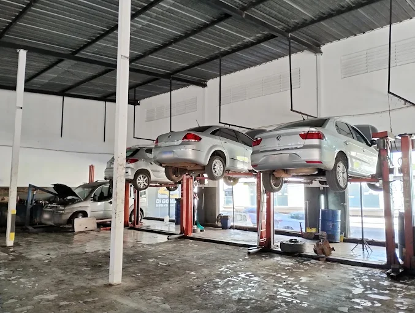
Oficina especializada · Belo Horizonte
Embreagem e câmbio com qualidade e bom atendimento.
Nossa equipe examina o carro, explica o que encontrou e passa o orçamento antes de começar. Serviço especializado em embreagens e transmissões no bairro Graça.
Atendemos toda linha nacional e importada
O que resolvemos
Serviço para o problema certo
Embreagem pesada, marcha arranhando, tranco no automatizado ou ruído na transmissão não pedem chute. Começamos pelo diagnóstico e indicamos o reparo necessário para o seu carro.
 01
01Embreagem
Diagnóstico, troca do kit e verificação do sistema de acionamento para veículos nacionais e importados.
Ver serviço 02
02Câmbio automatizado
Manutenção e reparo de sistemas com atuação eletrônica, incluindo análise de falhas e atuadores.
Ver serviço 03
03Câmbio manual
Revisão de engrenagens, rolamentos, sincronizadores, vazamentos e dificuldade de engate.
Ver serviço04Câmbio automático
Troca de fluido e manutenção de transmissão automática conforme a necessidade do veículo.
Ver serviço 05
05Freios e suspensão
Inspeção de pastilhas, discos, componentes de suspensão e itens ligados à segurança.
Ver serviço 06
06Diagnóstico técnico
Avaliação de sintomas, testes e desmontagem somente quando necessária para fechar o diagnóstico.
Ver serviço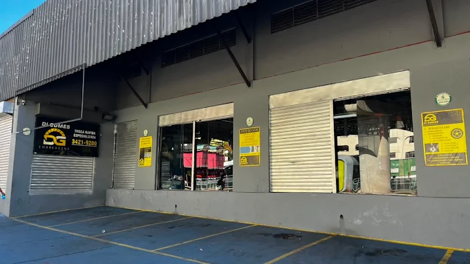
A oficina
Mais de uma década lidando com transmissão
A Di Gomes começou em 2014 e cresceu fazendo o trabalho que muita oficina evita: descobrir a origem de falhas em embreagens e câmbios.
- Orçamento apresentado antes do reparo
- Peças de marcas reconhecidas e aplicação correta
- Atendimento para carros nacionais e importados
- Pagamento por cartão ou Pix
Trabalho de verdade
Por dentro da oficina
Todas as imagens abaixo são da equipe, das peças e da rotina real de manutenção na unidade da Rua Juacema.
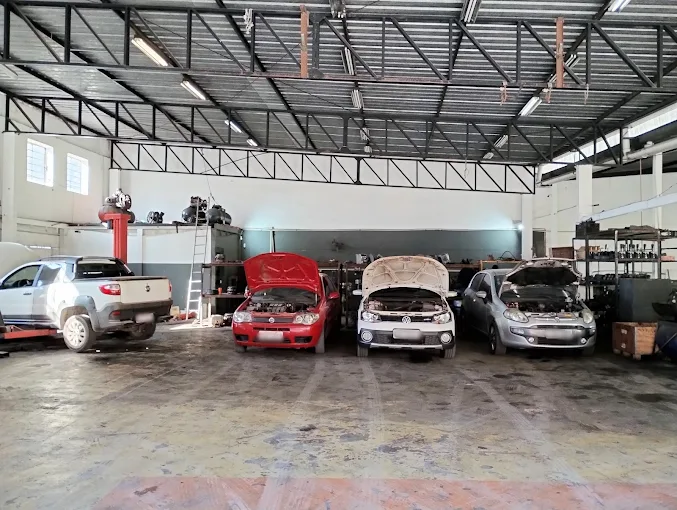
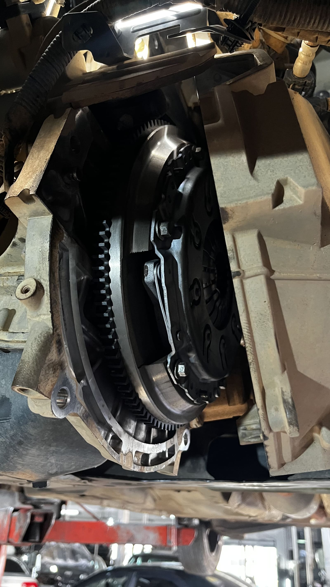
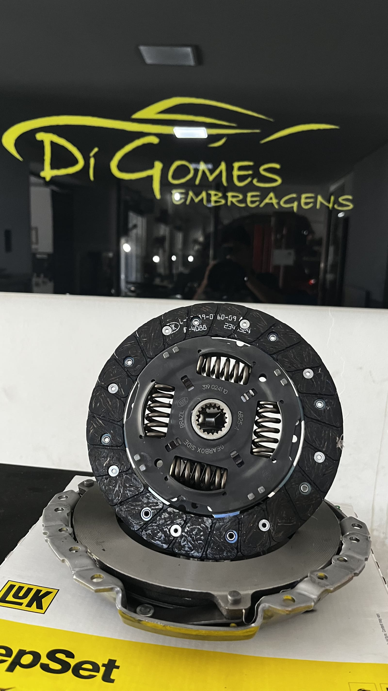
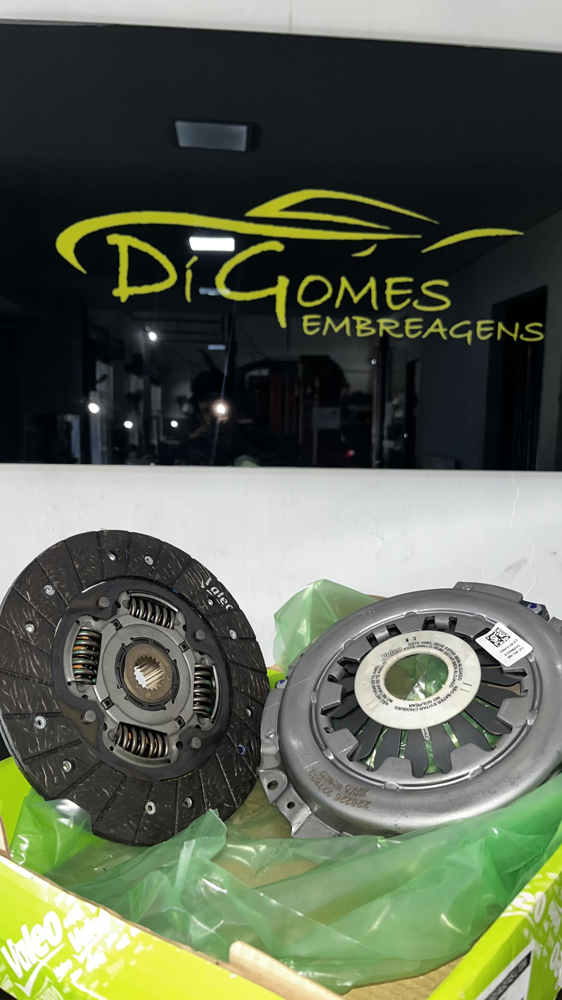
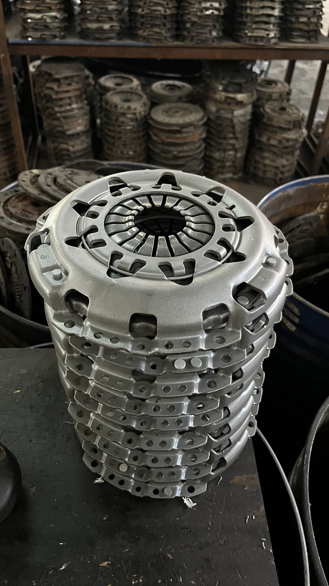
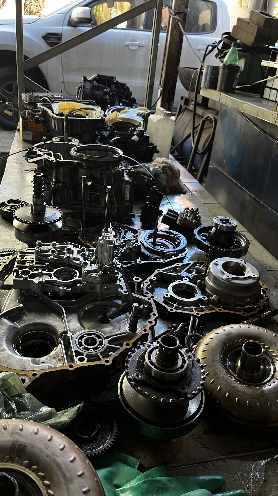
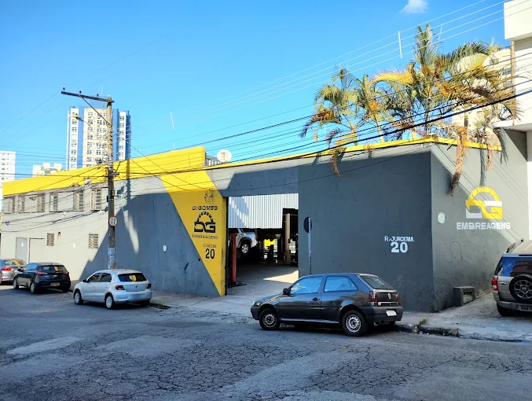
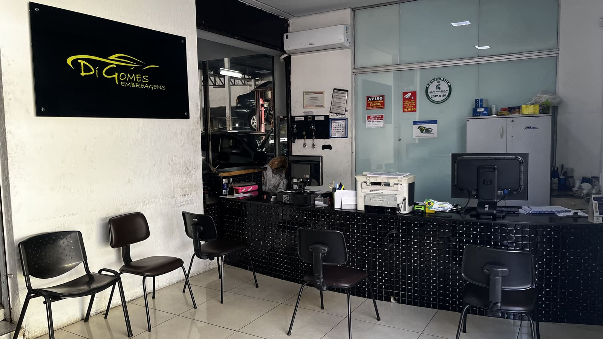
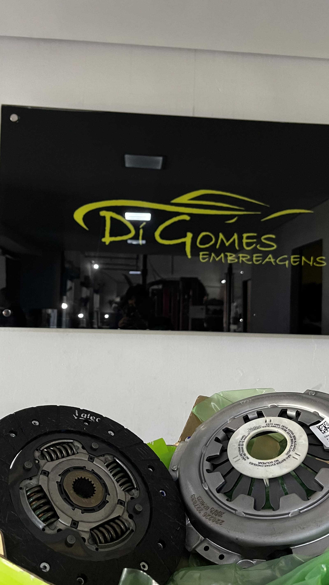
Onde estamos
No bairro Graça, em BH
- Endereço
- Rua Juacema, 20
Graça — Belo Horizonte/MG
CEP 31140-030 - Atendimento
- Segunda a sexta, das 8h às 17h
- Telefone
- (31) 3421-9200
Conte o que o carro está fazendo.
Se puder, informe modelo, ano e os sintomas. Isso agiliza o atendimento.